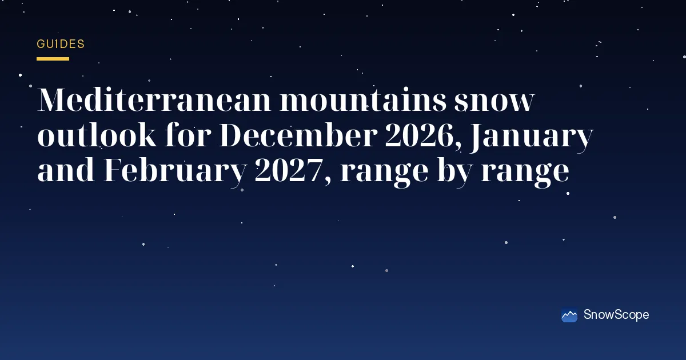
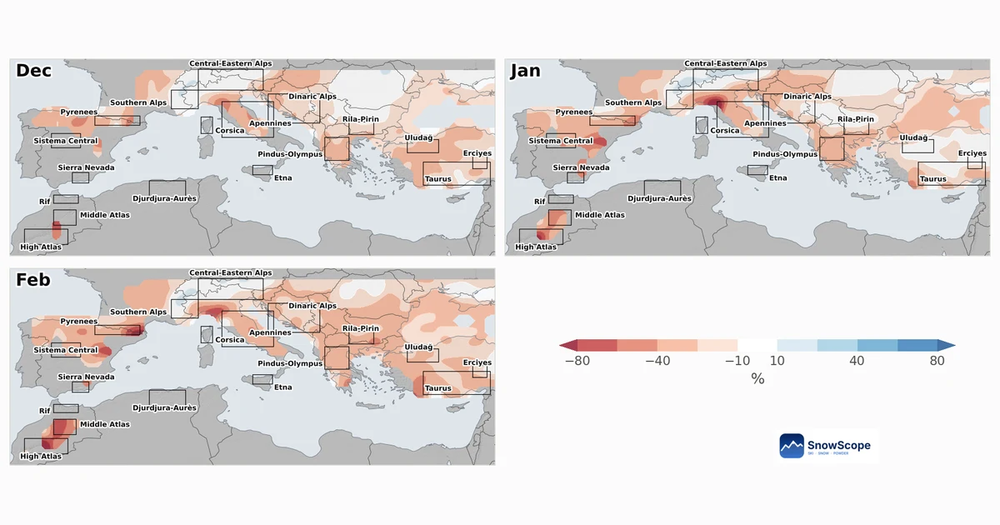
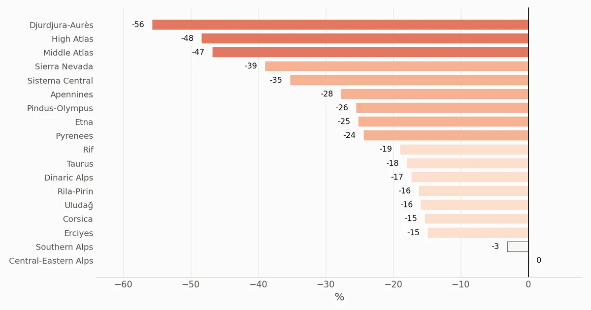
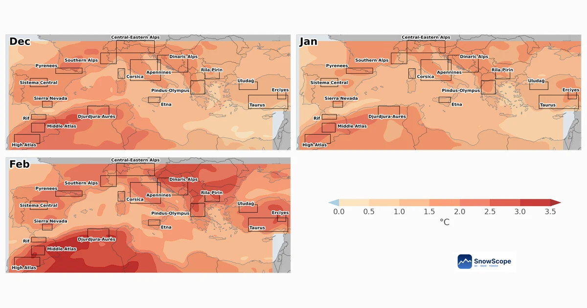
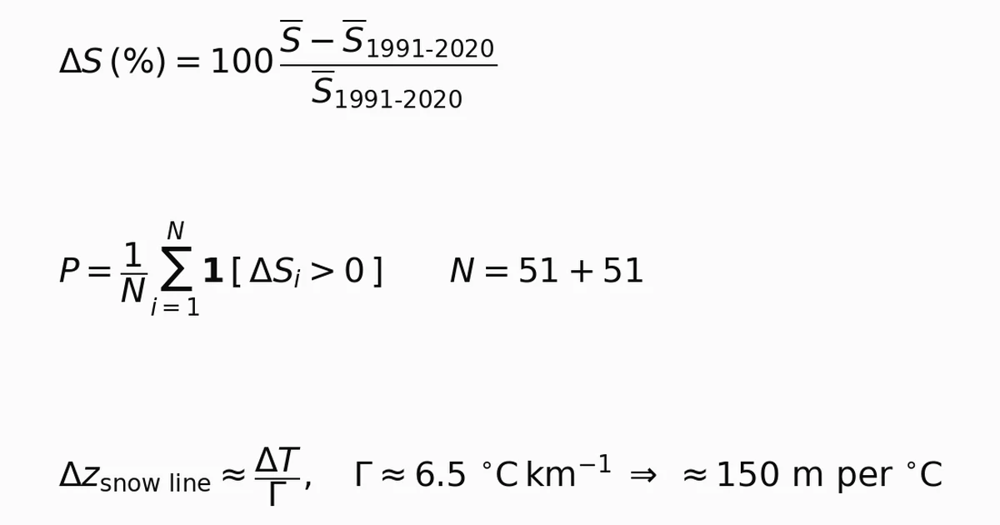
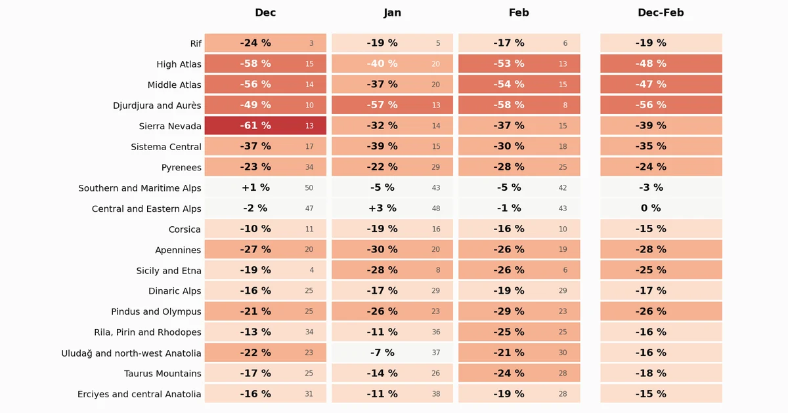

Mediterranean mountains snow outlook for December 2026, January and February 2027, range by range
Will this winter be a snowy one in the Atlas, the Pyrenees, the Apennines or the Balkans? Nobody can promise a powder day in January from late November, but the seasonal forecasts can tell us which way the odds lean. We read the ECMWF and Météo-France seasonal forecasts started on 1 November 2026 (51 members each) for December, January and February, and compared every month with the 1991-2020 normal on 18 mountain ranges around the Mediterranean. The signal is the same almost everywhere: a winter 1.1 to 2.7 °C warmer than normal, with near-normal or even above-normal precipitation, but less of it falling as snow. Snowfall is below normal on 16 of the 18 ranges, by about half in the High and Middle Atlas and in the Djurdjura and Aurès, by about a quarter in the Pyrenees, the Apennines and Greece. Only the Alps stay close to their normal. Read it as a wet-but-warm winter with a higher snow line, and as odds, not a certainty.
See the live snow forecast for Mediterranean mountains in the SnowScope appSnow depth, powder alerts and the 3D map, free.
How to read a seasonal snow outlook
A seasonal forecast does not predict the weather of a given day three months ahead. It runs the atmosphere and the ocean many times from slightly different starting points and looks at what the whole set of runs, the ensemble, does on average. ECMWF's SEAS5 system (Johnson et al. 2019) and the Météo-France system each give 51 members. For each range and month we take the snowfall of every member, average it over the 1-degree grid cells of the range and compare it with the 1991-2020 normal of the same month (Hersbach et al. 2020). Two numbers come out: the snowfall anomaly in per cent of the normal, and the share of the 102 members that give more snow than normal.
The second number matters as much as the first. If about half the members are above normal, there is no signal, whatever the mean says. When only 10 to 20 % of members are above normal, the forecasts agree on a snow-poor month. When the ECMWF and Météo-France systems disagree on the sign, we say so. Temperature comes from ECMWF, precipitation from ECMWF and the German weather service DWD.
Honesty matters here. In winter, the skill of seasonal forecasts over the Mediterranean is limited, much lower than in the tropics, and the forecasts are often over-confident (Weisheimer and Palmer 2014). Temperature is the most reliable part, helped by warm seas and the long-term warming trend. Precipitation and snowfall are much less reliable, because Mediterranean winters are driven by a handful of storms and by the North Atlantic Oscillation (Hurrell 1995), which is hard to forecast months ahead. So treat a 48 % deficit as a clear tilt of the odds, not as a measured value.

The formulas behind the numbers
The snowfall anomaly is ΔS = 100 · (S - S̄) / S̄, where S is the forecast mean snowfall of the month and S̄ the 1991-2020 normal, both in millimetres of water. The member share is P = (1/N) Σ 1[ΔS_i > 0], the fraction of the N members whose own anomaly is positive; the two systems are weighted equally. Cells whose normal is below 0.2 mm of snow water per day are left out of the maps, because a per cent of almost nothing is meaningless.
Why can a winter be wetter but less snowy? Because the height where rain turns to snow follows temperature. With the standard lapse rate of about 6.5 °C per kilometre, every degree of warming lifts the snow line by roughly 150 m. With seasonal anomalies of 1.1 to 2.7 °C, the mean snow line this winter would sit about 200 to 350 m higher than normal. On a big range like the Alps that mostly costs the low slopes. On ranges where much of the snow falls between 1,000 and 2,000 m, such as the Atlas, the Apennines or the Sierra Nevada, it is a large share of the snow area (Fayad et al. 2017).

Morocco and Algeria: Rif, High Atlas, Middle Atlas, Djurdjura and Aurès
High Atlas. This is the strongest dry-snow signal of the whole basin: December -58 % (15 % of members above normal), January -40 % (20 %) and February -53 % (13 %), or -48 % for the winter as a whole. Both systems agree each month: in December ECMWF gives -54 % and Météo-France -62 %. Yet precipitation is not the problem: it is +11 % in December, -4 % in January and +32 % in February. The problem is warmth, +2.1, +2.0 and +2.6 °C, which pushes the rain-snow limit up by about 340 m. For the Ourika, Rheraya and Toubkal valleys, where snowmelt feeds spring river flow (Boudhar et al. 2009; Baba et al. 2018), that would mean storms that bring rain at mid-height and snow only near the summits.
Middle Atlas. Almost the same picture: December -56 % (14 % of members above normal), January -37 % (20 %) and February -54 % (15 %), -47 % over the winter, with the warmest February of all ranges (+2.7 °C). Ifrane and Michlifen sit near the height where the snow line shift matters most. Precipitation is close to normal (+4, -9 and +12 %).
Rif. The Rif normally gets little snow, so the per cents are on small amounts: December -24 % (3 % of members above normal), January -19 % (5 %) and February -17 % (6 %). The share of members above normal is very low, so the signal is consistent, but the stakes are mostly on the highest summits around Jbel Tidirhine.
Djurdjura and Aurès. Here the two systems differ in strength but not in sign. Together they give December -49 % (10 % of members above normal), January -57 % (13 %) and February -58 % (8 %), -56 % for the winter. ECMWF is very dry (-96 % in December) while Météo-France is close to normal in December (-3 %) and drier later. Unlike Morocco, precipitation is also below normal (-25, -18 and -29 %), so this is the one range where both less water and more warmth point the same way.
Winter rain and snow in north-west Africa depend strongly on the North Atlantic Oscillation: a negative phase steers Atlantic storms south towards Morocco (Knippertz et al. 2003). One or two such spells can make a season, so a dry outlook can still be broken by a single good storm.

Iberia and the Pyrenees: Sierra Nevada, Sistema Central, Pyrenees
Sierra Nevada. December -61 % (13 % of members above normal), January -32 % (14 %) and February -37 % (15 %); -39 % for the winter. December is the driest month, mainly in ECMWF (-85 %, against -38 % in Météo-France). Precipitation is above normal (+11, +11 and +36 %): a typical warm-wet pattern where the high slopes above Pradollano can still do well while the lower runs see rain.
Sistema Central. The clearest wet-but-warm case of the study: precipitation is +34 % in December, +33 % in January and +72 % in February, yet snowfall is December -37 % (17 % of members above normal), January -39 % (15 %) and February -30 % (18 %). The range is +1.8 °C warmer in December and the whole Sierra de Guadarrama and Gredos sit close to the rain-snow limit, so a warmer winter turns much of the extra water into rain.
Pyrenees. December -23 % (34 % of members above normal), January -22 % (29 %) and February -28 % (25 %), -24 % for the season, with a warm anomaly of +1.9, +1.6 and +2.1 °C. The systems differ in December: ECMWF gives -44 %, Météo-France -1 %, so December is uncertain while January and February lean dry in both. Precipitation stays near normal. Pyrenean snowpack depends on the NAO and on the track of Atlantic lows (López-Moreno and Vicente-Serrano 2007), and the high resorts of Andorra, Baqueira or Saint-Lary are far less exposed to a higher snow line than low ones.

The Alps and Corsica: the exception that holds
Central and Eastern Alps. The only range that stays at its normal: December -2 % (47 % of members above normal), January +3 % (48 %) and February -1 % (43 %), 0 % for the winter. The members split almost evenly and the systems disagree on the sign each month (ECMWF slightly below, Météo-France slightly above), which means no signal. The Alps are +1.6 to +2.0 °C warmer too, but most of the snow there falls well above the shifted snow line, and precipitation is above normal (+11, +9 and +14 %). Below about 1,500 m the warm signal still matters: Swiss records show how sensitive low-altitude snow days are to temperature (Marty 2008).
Southern and Maritime Alps. Also near normal: December +1 % (50 % of members above normal), January -5 % (43 %) and February -5 % (42 %), -3 % for the season. Precipitation is the most clearly above normal of the Alpine ranges (+18, +13 and +27 %), so a few strong storms from the Mediterranean side, the usual source of big snowfalls in Isola 2000, Limone or Sestriere, are well within the odds.
Corsica. December -10 % (11 % of members above normal), January -19 % (16 %) and February -16 % (10 %); -15 % over the winter. The island's snow falls on the high ground of Monte Cinto and Monte Rotondo, and with +1.4 °C in December the members rarely beat the normal.

Italy: the Apennines, Sicily and Etna
Apennines. December -27 % (20 % of members above normal), January -30 % (20 %) and February -26 % (19 %); -28 % for the season. All three months are below normal in both systems, with ECMWF drier (-44 % in December) than Météo-France (-9 %). Precipitation is near normal (+5, +1 and +4 %), so again the deficit comes from warmth, about 250 m of snow line. The highest Abruzzo resorts keep a fair chance in cold spells; the low resorts of the central Apennines are the most exposed.
Sicily and Etna. December -19 % (4 % of members above normal), January -28 % (8 %) and February -26 % (6 %). Here precipitation is also below normal (-20, -14 and -19 %). Etna's upper slopes above 2,000 m still get snow in most winters; the outlook suggests fewer snow days lower down.
The Balkans and Greece: Dinaric Alps, Pindus and Olympus, Rila and Pirin
Dinaric Alps. December -16 % (25 % of members above normal), January -17 % (29 %) and February -19 % (29 %); -17 % for the winter. The member share above normal stays between 25 and 29 %, a moderate dry tilt rather than a strong signal, and February is the warmest month (+2.3 °C). Precipitation is slightly above normal (+10, +6 and +9 %), the same wet-but-warm pattern.
Pindus and Olympus. December -21 % (25 % of members above normal), January -26 % (23 %) and February -29 % (23 %); -26 % for the winter. Unlike most ranges, precipitation is also slightly below normal (-5, -11 and -6 %), so Greek mountains face both less water and a higher snow line.
Rila, Pirin and Rhodopes. December -13 % (34 % of members above normal), January -11 % (36 %) and February -25 % (25 %); -16 % for the season. December and January show a weak signal (34 and 36 % of members above normal), February a clearer deficit with the strongest warmth (+2.5 °C). Bansko, Borovets and Pamporovo rely on cold continental air; a warm February would shorten the season at lower runs.
Türkiye: Uludağ, Taurus and Erciyes
Uludağ and north-west Anatolia. December -22 % (23 % of members above normal), January -7 % (37 %) and February -21 % (30 %); -16 % for the winter. January is close to normal, with 37 % of members above it, so the signal is weak; December and February lean dry.
Taurus Mountains. December -17 % (25 % of members above normal), January -14 % (26 %) and February -24 % (28 %); -18 % for the season, with precipitation slightly below normal in January (-14 %). The high Taurus near Saklıkent and Davraz have a deep normal snowfall, so a deficit of this size still leaves real snow above about 2,000 m.
Erciyes and central Anatolia. December -16 % (31 % of members above normal), January -11 % (38 %) and February -19 % (28 %); -15 % for the winter. The most continental range in this study is also the one where the two systems agree best in January (ECMWF -11 %, Météo-France -11 %). With January +1.5 °C, Erciyes stays cold enough for snow at resort height in most spells; February is the month at risk (+2.3 °C).
What this outlook can and cannot tell you
These numbers are averages over 1-degree cells, about 100 km across, whose mean height is far below the summits. That is why the normal snowfall of a cell looks small: 14.3 mm of snow water for a whole winter in the High Atlas cells, 139.9 mm in the Central Alps. A summit gets much more. We therefore compare ratios to the normal of the same cells, which cancels much of the height bias, and we never turn these ratios into centimetres at a resort.
Seasonal forecasts are best at the broad temperature signal and weakest at the storms that make a Mediterranean winter. Their reliability for precipitation in this region is modest (Weisheimer and Palmer 2014), and a single blocked spell or a cut-off low can bring a week of heavy snow in a winter that ends up below normal. For trip planning, use the 15-day forecast; for avalanche danger, the official bulletins.
Tips for skiers
- Plan high: with a snow line about 200 to 350 m above normal, resorts and routes with terrain above 2,000 m (Alps, high Pyrenees, Toubkal area, Erciyes) are the safer bet.
- The Alps are the only range near normal this winter; for a booking made now, they carry the least seasonal risk.
- In the Atlas, Apennines and Greece, keep plans flexible and book late, after a storm, when the 15-day forecast shows cold air.
- Wet-but-warm winters bring rain on snow at mid-height: watch the freezing level before every trip.
References and credits
- Copernicus Climate Change Service (C3S): seasonal forecast anomalies on single levels, monthly post-processed (ECMWF SEAS5, Météo-France, DWD), start 1 November 2026 cds.climate.copernicus.eu/datasets/seasonal-postprocessed-single-levels
- Johnson, S.J., Stockdale, T.N., Ferranti, L., Balmaseda, M.A., Molteni, F., Magnusson, L., Tietsche, S., Decremer, D., Weisheimer, A., Balsamo, G., Keeley, S.P.E., Mogensen, K., Zuo, H. and Monge-Sanz, B.M. (2019). SEAS5: the new ECMWF seasonal forecast system. Geoscientific Model Development 12, 1087-1117 doi.org/10.5194/gmd-12-1087-2019
- Weisheimer, A. and Palmer, T.N. (2014). On the reliability of seasonal climate forecasts. Journal of the Royal Society Interface 11, 20131162 doi.org/10.1098/rsif.2013.1162
- Fayad, A., Gascoin, S., Faour, G., López-Moreno, J.I., Drapeau, L., Le Page, M. and Escadafal, R. (2017). Snow hydrology in Mediterranean mountain regions: a review. Journal of Hydrology 551, 374-396 doi.org/10.1016/j.jhydrol.2017.05.063
- Hersbach, H. et al. (2020). The ERA5 global reanalysis. Quarterly Journal of the Royal Meteorological Society 146, 1999-2049 (monthly means 1991-2020, used as the normal) doi.org/10.1002/qj.3803
- Knippertz, P., Christoph, M. and Speth, P. (2003). Long-term precipitation variability in Morocco and the link to the large-scale circulation in recent and future climates. Meteorology and Atmospheric Physics 83, 67-88 doi.org/10.1007/s00703-002-0561-y
- Baba, M.W., Gascoin, S., Jarlan, L., Simonneaux, V. and Hanich, L. (2018). Variations of the snow water equivalent in the Ourika catchment (Morocco) over 2000-2018 using downscaled MERRA-2 data. Water 10, 1120 doi.org/10.3390/w10091120
- Boudhar, A., Hanich, L., Boulet, G., Duchemin, B., Berjamy, B. and Chehbouni, A. (2009). Evaluation of the Snowmelt Runoff Model in the Moroccan High Atlas Mountains using two snow-cover estimates. Hydrological Sciences Journal 54(6), 1094-1113 ird.hal.science/ird-00491127
- López-Moreno, J.I. and Vicente-Serrano, S.M. (2007). Atmospheric circulation influence on the interannual variability of snow pack in the Spanish Pyrenees during the second half of the 20th century. Nordic Hydrology 38, 33-44 doi.org/10.2166/nh.2007.030
- Marty, C. (2008). Regime shift of snow days in Switzerland. Geophysical Research Letters 35, L12501 doi.org/10.1029/2008GL033998
- Hurrell, J.W. (1995). Decadal trends in the North Atlantic Oscillation: regional temperatures and precipitation. Science 269, 676-679 doi.org/10.1126/science.269.5224.676
About these numbers
Seasonal forecasts started on 1 November 2026: ECMWF SEAS5 and Météo-France (51 members each) for snowfall, ECMWF for temperature, ECMWF and DWD for precipitation; anomalies relative to each system's own past runs, expressed against the 1991-2020 normal; 1-degree cells averaged over each range.
Cite this report
For research, teaching or the press: the numbers and charts are free to reuse under CC BY 4.0 with this citation.
SnowScope (2026), Mediterranean mountains snow outlook for December 2026, January and February 2027, range by range, https://snowscope.app/blog/en/2026/11/mediterranean-mountains-snow-outlook-december-january-february-2026-2027.html, accessed 2026-11-25
SnowScope (Atlas Labs). (2026, November 25). Mediterranean mountains snow outlook for December 2026, January and February 2027, range by range. SnowScope snow reports. https://snowscope.app/blog/en/2026/11/mediterranean-mountains-snow-outlook-december-january-february-2026-2027.html
BibTeX
@misc{snowscope2026mediterraneanmountainssn,
author = {{SnowScope (Atlas Labs)}},
title = {Mediterranean mountains snow outlook for December 2026, January and February 2027, range by range},
year = {2026},
month = nov,
howpublished = {\url{https://snowscope.app/blog/en/2026/11/mediterranean-mountains-snow-outlook-december-january-february-2026-2027.html}},
note = {Published 2026-11-25 08:30 UTC; accessed 2026-11-25}
}· CC BY 4.0 · Methods, data and tools →
Follow Mediterranean mountains
Free: a message when fresh snow is coming, and the forecast every morning.
More snow reports

Pick a region, dates, budget and what matters; get every resort ranked with the likely snow at the start, the pass, hotel and food per person, chalets to book, and a game mode.

Snow outlook for the central and Patagonian Andes from 24 November to 14 December 2026, from the 50-member ECMWF ensemble, NOAA GEFS and NASA MODIS: snow line on the ground near 3,000 m, Portillo 40 % above normal, Bariloche and Chapelco almost nothing.

Orelle holds 42 cm, close to the typical 53 cm for mid-November. Fresh snow forecast across the Alps over the next three days.